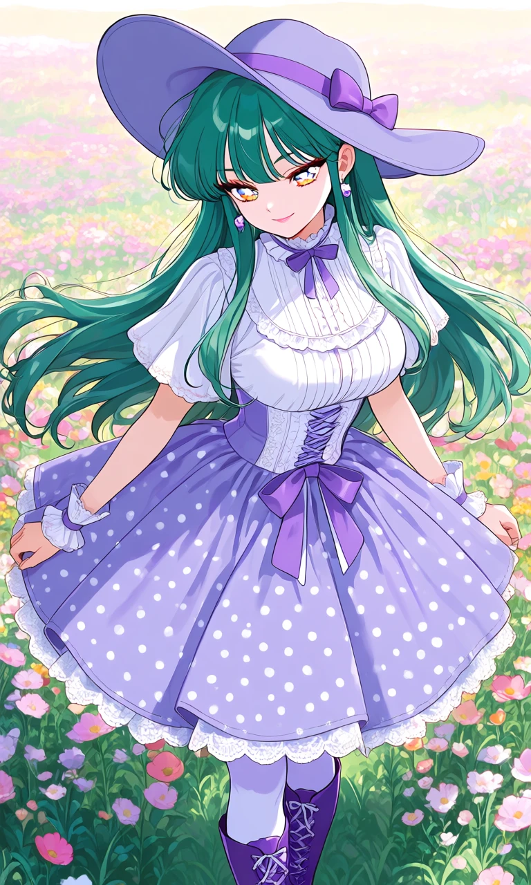
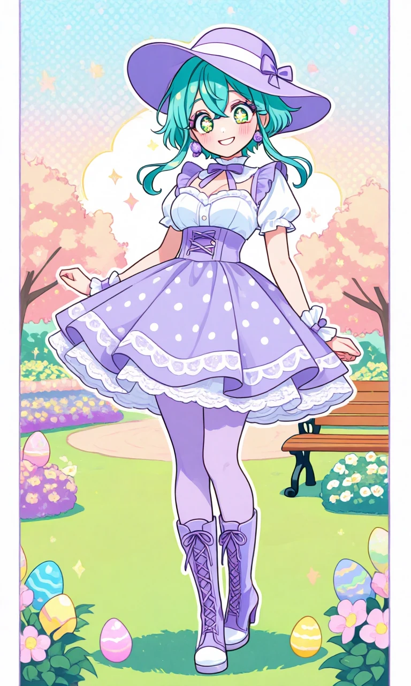

Lilac Polka Promenade

Outfit Prompt
She is wearing a wide-brimmed lavender-purple hat with a matching purple ribbon band and a small decorative bow on the side. It has a soft, rounded crown and a gentle downward brim. A white short-sleeved blouse with delicate ruffled lace at the cuffs and neckline, the skirt has a high, frilled collar with a small purple bow tied at the center. The front has a pretty white lace-up corset-style panel (with purple accents) that adds structure and a romantic touch. A larger purple bow sits at the waist, just below the bust. A flared, A-line skirt in lavender-purple fabric covered in white polka dots with a scalloped white lace trim that peeks out like a petticoat, giving volume to the skirt. pale lavender opaque tights and Tall, knee-high purple boots with a slight heel with corset lacing and white toe caps. She is wearing purple earrings and detached wrist frilled cuffs.
Outfit Examples



